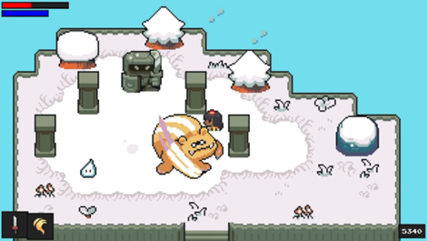

Vo Hieu Thuan - s3778600.Thuan is our leader and gave us this idea about a single-player role-playing game with turn-based tactics. He is currently a robotics major and has done multiple team projects throughout the course, from coding simple stuff to making operating systems. His hobbies are reading news about technology and finding out how things work and the mechanism behind it. He is interested in robotics, therefore, embedded systems and artificial intelligence to advance robot automation.
Hoang Nguyen - s3929351. Hoang currently studies software engineering and is our team member. His hobbies are finding out how things work like Thuan and making things himself. Since he tends to electronics, his interests are embedded systems and cloud-based systems. He used to build PC by buying separate components and troubleshooting PC problems.
Nguyen Chau - s3975133. Chau currently studies information technology, and his hobby is reading about new PC technology and products. He is interested in big data and the way of sorting out data efficiently. He has built his PC by himself and customized it with led to make it more beautiful. Also, he has learned some simple coding with the online tutorial.
Tan Wei Kit - s3970870. Tan currently study in artificial intelligence, and his hobby is like the major of us to find out new stuff and technology of the world related to computers. He is interested in artificial intelligence technology and networking in computers. He used to build his own PC and has a customized mechanical keyboard that he built from scratch. During his free time, he also goes online and learns simple stuff about AI and coding.
Our team worked together efficiently throughout the group assignment. We communicated through messenger and met each other face-to-face after the tutorial session. Right from the start, we quickly chose a topic to make within three days and made a cloud document so that every team member could jump in to write their part and see others people's progress. We tend to finish the work as soon as possible minimum three days before the deadline, so that we can have time to recheck the work.
Thuan's ideal job is to work in a company that makes automated robots for factories or a company related to designed robotics. Hoang's ideal job is to be an embedded system coder or a firmware coder. Chau's perfect job is to be an app or website developer. Tan's right job can be an AI programmer or something related to making AI on the machine. We all have a common element in knowing the basics of computer work and coding an application that runs on the computer. However, we still have to differentiate each position from the others. Thuan is more understanding of the mechanical work of objects or physic since he is in robotics major. Hoang deeply understands how the logic of computer components works with each other. Chau will better understand how to design user-friendly software. Tan will have a better understanding of computing mathematics since math will be used a lot in AI designing.
Our project focuses mostly on developing a game that can run smoothly on a Bare-metal OS system, which needs a Command Line Interpreter (CLI) to display images, video, and word Font on screen by applying the framebuffer with various binary header files. As for the game part, after a long discussion with each member, we had come to a decision that we would change the game type, not the game with turn-based tactics like before, but instead, an open-world role-playing game, which is inspired by The Legend of Zelda game series. We decided the name of the game is “The Enigmatic Journey”.
The game will give the player full control of the character, you can choose what to do during the game's vitality as moving around and battling the creatures they encounter, collecting material to craft weapons and enhance your gears, learning different abilities, and also healing your character by eating food, which makes the game more flexible to play. The main character has two parameters: the blue bar is the MP for the character to cast the spell and the red bar indicates the player's HP.
The project was motivated by the Zelda game and also by one of the most well-known games in the world now a day is Genshin Impact. We are fascinated by the freedom the game gives us, the player, to do everything we want, we can follow the main storylines and learn about the plot of the game, or we can explore the open world where a lot of interesting waiting for us to discover, finding out the story of the NPCs, collecting materials, fighting difference enemies, …
The current game trend now a day focuses on building a mysterious open world where players will never feel bored playing, the players will see that they are actually the main character in the game, and embark on an adventure to solve the world's mysteries with their companions. So our game will have a lot of elements that will satisfy the demands of gamers like an amazing storyline, a variety of enemies and NPCs, various abilities and weapons waiting for players to achieve, and a world with different environments to make the game more realistic. We see that our project has the potential to make a big splash in the domestic game industry in the near future.
Due to our game being based on other famous games so the competition will be extremely fierce because Zelda is the game of the year in 2017 and Genshin Impact was the Best Mobile Game in 2021. But unlike those games, which are animated in 3d, our game is created based on pixel type that requires less work on the graphics array and it makes the game run smoothly because it does not need a strong system to operate compared to the other two games. Moreover, pixel art is very attractive to a lot of gamers because it reminds them of the games of the last decades like Mario, Minecraft, … which encourages them to play our game more.
Our project focuses mostly on building a different version of the Zelda game in pixel type that makes a game quite similar but distinct from the game it is based on. The main plot is around a girl who was born in a quiet tiny town. One day, though, tragedy struck when a large number of monsters attacked and destroyed the town for no apparent cause. There was no one left to protect this tiny, isolated community because the men who rose to defend their hometown were severely injured in that onslaught. Fearing that the monsters would come back again, the girl set out to enter the forbidden area of the village, learning about the reason behind the mysterious attack.
There are some details we want to work on like putting some random chest to make the game easier and evoke the player's exploration, adding sidequests to increase the protagonist’s level before going into a boss fight, … However, due to a lack of time and staff, we should focus on the most crucial component, which is character and monster design. Before going on to the subsequent parts, we wanted to concentrate on animating the protagonists' actions and attacks, as well as the monsters' movements.Combat has always been key in RPG games so it can attract many people who want to experience it.
In order to create a simple game using command lines, we choose to use the Pycharm application, which contains a very helpful utility called the pygame module. The first step in programming is to design a screen to display the visuals that will appear on the screen. This is a very simple but essential component of every game. We test the screen 800 pixels wide and 600 pixels tall, and we added the game's caption to the bottom left corner.

Screen appears
Now we testing if we can display anything on the screen surface. we add some code with will display a rectangle size of 200 and 400 with the former being the width and the latter being the height. we set the position of the rectangle as 10x50 and fill it colour with red.

A rectangle has been created
The image displays perfectly on the screen surface.
Now we create a simple animation by moving the rectangle with buttons. Each time we click the button, we'll program the image to move 10 frames in the direction we want. The old position of the image won't be erased when we move the new one, so we'll need to repeat this step to be able to overlap the old position so that it appears as though we're moving the image. To do this, we'll need to create a surface proportional to the scale of the screen before moving the image.
The rectangle had moved to the right
The graphic shows a picture that has been altered before and after when we press the right button.
The same idea of presenting a picture was used for the video, but we added more images with a delay function in between. After a short delay, it will trigger the screen to refresh pictures in order to display videos (multiple frames display with delay in a short amount of time will mislead the user that the image is moving on its own).
After finishing the foundational steps, we must upload the game's image from the folder to the desktop. There will be a lot of code, therefore we must divide it up into various files to make it easier to comprehend and remedy errors in the future.
The same technique from the image displayed on the screen above is implemented in the game to create an individual map. We must first work with the map so that we can layer the characters on top of it and loop them to give them motion. As there will be many photos to upload to the screen, such as trees, barriers, boulders, etc., we need to organize them into a dictionary function so that they load neatly and are simple to locate.
For the player file, we not only loaded the images of the character like he moved right, left, up, down, idle image but also had to program the buttons so that when we press the button, we move the image of the character in the direction we click as shown above.

After everything is done, we import the map and player files into the main so that it reads the code and executes.
Trees, flowers, and character can be seen on the map.

The difference in an animation of the character
The map has been effectively formed, as seen by the trees and flowers that give it life. Our character has also appeared on the map, when moving, the character is also formed with various images, such as the image on the left, the image above, and the default image.
Following the completion of the game's character and map. We came to understand that a character can only move within the confines of the screen; if they attempt to travel outside of it, they will vanish off the screen. We struggled to program the character to move across the entire map and were forced to learn more about the setup. We spent a lot of time researching the issue before we finally came up with a solution, which was to program a camera that would put the character in the center and follow the character wherever it went. This would allow us to move freely around the map without being concerned about our character vanishing.

However, a new issue arises since our character is obscured by images of objects like trees and obstacles, and when we approach the edge of the map, we will exit into the dark, leading to a significant error in the game. Therefore, we must configure the collision command line so that whenever we approach an object's edge or the edge of the map, we are forbidden from moving any farther.
With this, the game is approximately halfway finished, the character may now be moved anywhere without the graphics overlapping.
We weren't able to finish the entire game because of a lack of time and help. When the prerequisites are reached, we will eventually add further features like weapons, spells, and different enemy types that will charge at us when we approach, sounds, music, ….
Example:

To finish this project, each member of our team is responsible for a certain task.
Thuan is a game developer for operating systems, whose responsibility it is to ensure that our game runs on operating systems without delays and that gamers have the greatest possible experience. This is crucial since lag occurs frequently in games when many graphics are loading at once, making it crucial to identify and correct it. Ascertain whether users hold high regard for your game.
Kit will create the characters, backdrops, and other visual elements as a graphic designer. This is a difficult undertaking because creating a realistic and gorgeous game takes a lot of photos, ambient backgrounds, and several character animations.
The people in charge of game programming will be Chau and Hoang. This may be said to need the greatest work, requiring two persons to set up the screen, the character-moving buttons, download the designer's graphics, and modify the enemy's assault when the character is nearby,... As can be seen, this task is rather extensive, therefore after Thuan and Kit have finished, they might need to assist us in creating this game's system.
| In scope | Features for protagonist | ||
|---|---|---|---|
| Priority | Feature | Description | |
| High | Customize the character control buttons for the player. | ||
| Animation of the protagonist. | -When the character rotates in different directions, it changes the visuals. -Right image, left image, up image, down image. -Right idle image, left idle image, up idle image, down idle image. |
||